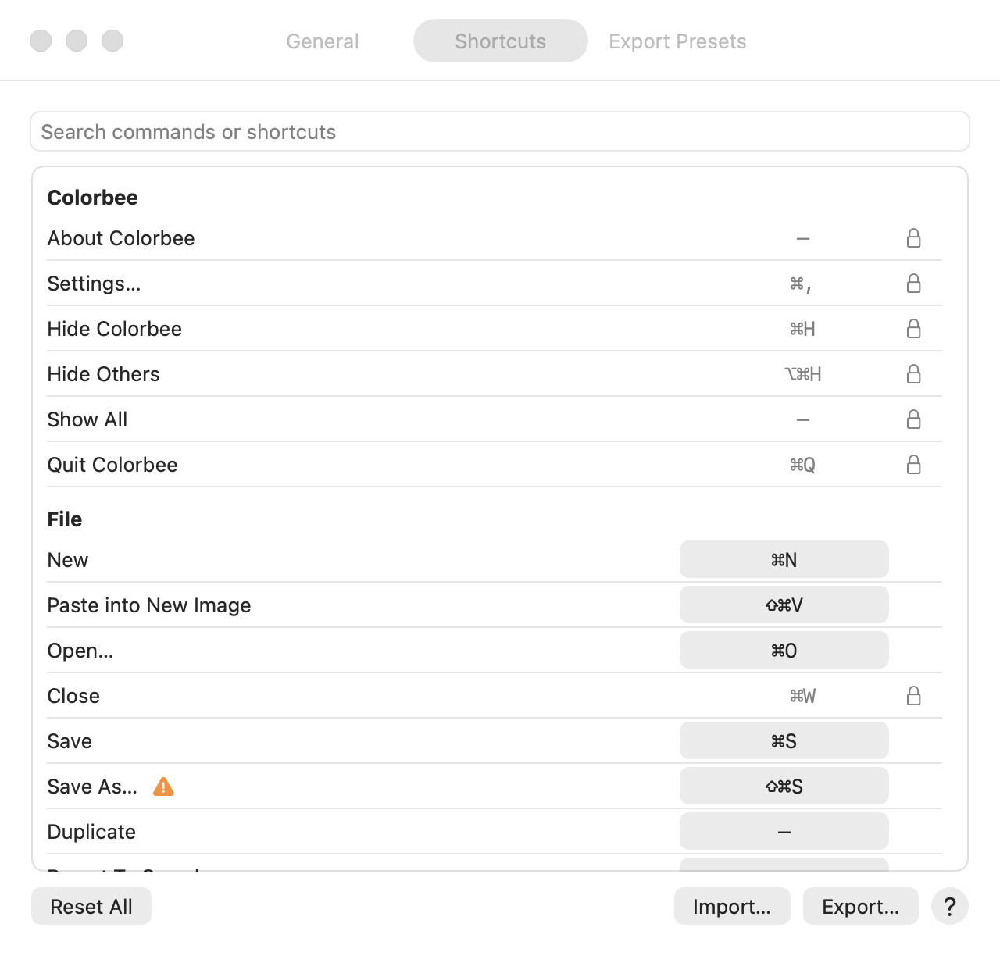

Choose Colorbee ▸ Settings… (⌘,). Changes take effect straight away.
General
Appearance: System (follows your Mac), Light or Dark. Your image itself is never tinted.
Open PDFs at: 150 DPI (smaller and faster), 200 DPI (recommended) or 300 DPI (sharpest, uses more memory). Each PDF page becomes an image at this resolution; a letter page is 1700 × 2200 pixels at 200 DPI. It applies to PDFs you open after changing it.
Shortcuts

To change a shortcut, click it, then press the new keys. Esc cancels; Delete removes the shortcut.
Menu commands need ⌘ or ⌃. Tool keys are a single key, or Shift and a key.
If another command already uses those keys, Colorbee asks before moving them. If your Mac uses them for something else, an orange warning shows beside the command.
A blue dot marks a changed shortcut. The arrow beside it puts that one back, and Reset All puts them all back.
The Mac's own commands, such as Quit and Hide, are shown with a padlock and can't be changed.
Export… saves your shortcuts to a file, and Import… loads them, for example on another Mac.
Search finds a command by name or by its keys.
Export Presets
The sizes in File ▸ Export As. Each saves a PNG; images are never made bigger.
Each preset has a name, a size in pixels, and Width (that many pixels wide) or Fits square (fits inside a square that size).
Scaling: Automatic picks sharp pixels for small pixel art and smooth for everything else. Choose Sharp pixels or Smooth to always use one.
Add Preset, the minus button to remove one, and Reset to Defaults.